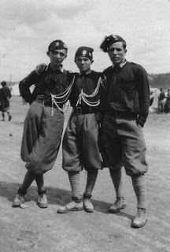

2012-11-18T19:49:00.000+01:00
Alejandro Magno aficionado al mundo submarino
Alejandro Magno aficionado al mundo submarino
Según la tradición, y por lo tanto no se puede hablar de hechos irrefutables y claros, Alejandro Magno era aficionado al mundo submarino. El rey macedonio, hombre que gobernó su pueblo entre el 336 antes de Cristo y el 323 y que había nacido en el 356, fue un hombre que aportó algunos avances al mundo bélico y por lo tanto podemos suponer que no ponía reparos a las nuevas ideas.
Así, cuando se interesó por la vida submarina, buscó un método para poder conocer esta de manera más directa y cómoda. Según la leyenda, muy conocida en la Edad Media, Alejandro Magno ordenó construir un barril de cristal, supongo que sólo la tapadera era de este material, y dentro de él se sumergía bajo el agua para observar los peces nadar.
Como decía, esta leyenda era popular en la Edad Media y hay varios dibujos que representa al rey macedonio dentro de lo que podríamos considerar como un precursor antiquísimo del batiscafo. La imagen que encabeza la entrada pertenece a un manuscrito del siglo XV que se conserva en la Biblioteca Británica y que ilustra lo que les cuento.
Fuente: Ideas & Inventos de un milenio, 900-1900, de Javier Ordoñez.
Me puedes seguir en twitter: @vitike
Y Curistoria también está en Facebook
Según la tradición, y por lo tanto no se puede hablar de hechos irrefutables y claros, Alejandro Magno era aficionado al mundo submarino. El rey macedonio, hombre que gobernó su pueblo entre el 336 antes de Cristo y el 323 y que había nacido en el 356, fue un hombre que aportó algunos avances al mundo bélico y por lo tanto podemos suponer que no ponía reparos a las nuevas ideas.
Así, cuando se interesó por la vida submarina, buscó un método para poder conocer esta de manera más directa y cómoda. Según la leyenda, muy conocida en la Edad Media, Alejandro Magno ordenó construir un barril de cristal, supongo que sólo la tapadera era de este material, y dentro de él se sumergía bajo el agua para observar los peces nadar.
Como decía, esta leyenda era popular en la Edad Media y hay varios dibujos que representa al rey macedonio dentro de lo que podríamos considerar como un precursor antiquísimo del batiscafo. La imagen que encabeza la entrada pertenece a un manuscrito del siglo XV que se conserva en la Biblioteca Británica y que ilustra lo que les cuento.
Fuente: Ideas & Inventos de un milenio, 900-1900, de Javier Ordoñez.
2012-11-14T23:17:00.000+01:00
Labrándose una imagen pública
Labrándose una imagen pública
Los hombres que se juntaron, con el rango de general, en la Segunda Guerra Mundial, combatieron contra el enemigo, pero también compitieron entre ellos para mostrar cuál era el mejor y sumar medallas en el mundo de la publicidad y el ego. En la campaña de Sicilia Patton y Montgomery tuvieron su pulso, pero no eran los únicos. Mark Clark y Omar Bradley, otros famosos generales, no se quedaron atrás.
Clark fue un caso extremo que llegó hasta a normalizar cómo se tenía que hablar de él. Según cuenta algún historiador, estaba obsesionado por las relaciones públicas y tenía varias decenas de hombres trabajando para él, para garantizar que sus acciones y las de sus tropas recibirá la máxima difusión y publicidad. Proclamó entre aquellos que hablaban de él la regla tres en uno: todo comunicado de prensa debía mencionar su nombre al menos tres veces en la primera página y al menos una en todas las demás.
El general también sabía cuál era su lado bueno, desde el punto de vista de la fotogenia, y por ello exigía siempre que la fotos mostraran su flanco izquierdo. La imagen que acompaña esta entrada muestra ese lado, por supuesto. Desde luego, no se puede decir que este hombre no puso empeño en labrarse una imagen pública a pesar de estar metido en mitad de una guerra.
Fuente: La tormenta de la guerra, de Andrew Roberts
Me puedes seguir en twitter: @vitike
Y Curistoria también está en Facebook
Los hombres que se juntaron, con el rango de general, en la Segunda Guerra Mundial, combatieron contra el enemigo, pero también compitieron entre ellos para mostrar cuál era el mejor y sumar medallas en el mundo de la publicidad y el ego. En la campaña de Sicilia Patton y Montgomery tuvieron su pulso, pero no eran los únicos. Mark Clark y Omar Bradley, otros famosos generales, no se quedaron atrás.
Clark fue un caso extremo que llegó hasta a normalizar cómo se tenía que hablar de él. Según cuenta algún historiador, estaba obsesionado por las relaciones públicas y tenía varias decenas de hombres trabajando para él, para garantizar que sus acciones y las de sus tropas recibirá la máxima difusión y publicidad. Proclamó entre aquellos que hablaban de él la
regla tres en uno: todo comunicado de prensa debía mencionar su nombre al menos tres veces en la primera página y al menos una en todas las demás.
El general también sabía cuál era su lado bueno, desde el punto de vista de la fotogenia, y por ello exigía siempre que la fotos mostraran su flanco izquierdo. La imagen que acompaña esta entrada muestra ese lado, por supuesto. Desde luego, no se puede decir que este hombre no puso empeño en labrarse una imagen pública a pesar de estar metido en mitad de una guerra.
Fuente: La tormenta de la guerra, de Andrew Roberts
2012-11-12T22:48:00.004+01:00
El origen de los Knickerbockers de Nueva York
El origen de los Knickerbockers de Nueva York
Hace mucho ya que les conté la historia del suelo del Boston Garden, hoy ya desaparecido. Vuelvo al baloncesto NBA para contarles el porqué de los knickerbockers de Nueva York, otro de los equipos clásicos del mundo de la canasta.
Aunque se suele utilizar el término acortado, knicks, en realidad el equipo neoyorkino es New York Knickerbockers. Esta palabreja tan larga tiene su origen nada más y nada menos que en los primeros años del siglo XVII, cuando los colonos holandeses comenzaron a llegar al otro lado del Atlántico. Aquellos hombres llevaban unos pantalones muy característicos enrollados justo hasta debajo de la rodilla y que eran conocidos como knickerbockers o knickers.
Con el tiempo, un holandés vestido con uno de esos pantalones fue tomándose como símbolo de la ciudad de Nueva York. De hecho, a finales del siglo XIX y comienzos del XX, un personaje conocido como Padre Knickerbocker, vestido con un sombrero de tres picos, una peluca, unos zapatos con hebillas y, por supuesto, con aquellos pantalones fue asociado de manera total con la ciudad.
En 1845, el equipo de baseball de Manhattan se formó usando ya ese nombre: New York Knickerbockers. En 1946 la Asociación de Baloncesto de América concedió a la ciudad la licencia o franquicia para formar un equipo y su fundador, Ned Irish, eligió el nombre de los Knickerbockers, una vez más para asociarlo con Nueva York.
Fuente: NBA.com
Me puedes seguir en twitter: @vitike
Y Curistoria también está en Facebook

Hace mucho ya que les conté la historia del suelo del
Boston Garden, hoy ya desaparecido. Vuelvo al baloncesto NBA para contarles el porqué de los
knickerbockers de Nueva York, otro de los equipos clásicos del mundo de la canasta.
Aunque se suele utilizar el término acortado,
knicks, en realidad el equipo neoyorkino es
New York Knickerbockers. Esta palabreja tan larga tiene su origen nada más y nada menos que en los primeros años del siglo XVII, cuando los colonos holandeses comenzaron a llegar al otro lado del Atlántico. Aquellos hombres llevaban unos pantalones muy característicos enrollados justo hasta debajo de la rodilla y que eran conocidos como
knickerbockers o
knickers.
Con el tiempo, un holandés vestido con uno de esos pantalones fue tomándose como símbolo de la ciudad de Nueva York. De hecho, a finales del siglo XIX y comienzos del XX, un personaje conocido como
Padre Knickerbocker, vestido con un sombrero de tres picos, una peluca, unos zapatos con hebillas y, por supuesto, con aquellos pantalones fue asociado de manera total con la ciudad.
En 1845, el equipo de
baseball de Manhattan se formó usando ya ese nombre:
New York Knickerbockers. En 1946 la Asociación de Baloncesto de América concedió a la ciudad la licencia o franquicia para formar un equipo y su fundador, Ned Irish, eligió el nombre de los
Knickerbockers, una vez más para asociarlo con Nueva York.
Fuente: NBA.com
2012-11-10T10:57:00.002+01:00
Nunca me aprendí la lista de los reyes godos
Nunca me aprendí la lista de los reyes godos
Estoy seguro de que muchos de ustedes conocerán el blog Historias de la historia, pilotado por Javier Sanz y que es un referente en la blogosfera nacional, con varios premios importantes, y especialmente en los blog dedicados a la historia. El blog es más que recomendable, es una entrada ineludible en el lector de RSS, y para aquellos que no lo conozcan les bastará una mirada rápida para convencerse. La historia en su faceta más desconocida y sorprendente les espera allí y la verdad es que las cosas que va descubriendo día a día Javier no tienen desperdicio.
Bien, pues el blog ha dado como fruto un libro titulado Nunca me aprendí la lista de los reyes godos que recopila entradas del blog e incorpora otras inéditas en sus 368 páginas. Organizadas en cinco capítulos, las historias que cuenta Javier se reparten por toda la historia de la humanidad. Estoy seguro de que les encantará y será una lectura de lo más entretenida y provechosa.
Me puedes seguir en twitter: @vitike
Y Curistoria también está en Facebook
Estoy seguro de que muchos de ustedes conocerán el blog
Historias de la historia, pilotado por Javier Sanz y que es un referente en la blogosfera nacional, con varios premios importantes, y especialmente en los blog dedicados a la historia. El blog es más que recomendable, es una entrada ineludible en el lector de RSS, y para aquellos que no lo conozcan les bastará una mirada rápida para convencerse. La historia en su faceta más desconocida y sorprendente les espera allí y la verdad es que las cosas que va descubriendo día a día Javier no tienen desperdicio.
Bien, pues el blog ha dado como fruto un libro titulado
Nunca me aprendí la lista de los reyes godos que recopila entradas del blog e incorpora otras inéditas en sus 368 páginas. Organizadas en cinco capítulos, las historias que cuenta Javier se reparten por toda la historia de la humanidad. Estoy seguro de que les encantará y será una lectura de lo más entretenida y provechosa.
2012-11-07T23:29:00.001+01:00
¿Cómo se gana la vida un escritor?
¿Cómo se gana la vida un escritor?
¿Cuándo puede uno decir que es escritor? ¿Cuándo escribe? ¿Cuándo publica libros? ¿Cuándo es su profesión? No sabría decirles, porque en muchos casos un escritor se ve obligado a trabajar en algo poco relacionado con la literatura para poder subsistir y pagar facturas. En este caso, ¿deja de ser escritor? Ya saben ustedes que hay dos tipos de escritores aficionados: los que se acuestan muy tarde y los que madrugan mucho. Este problema no es originario de nuestros días y son muchos los personajes importantes en la historia de la literatura que se han ganado la vida de maneras más o menos extrañas. Aquí les dejo una lista con unos cuantos ejemplos, que será completada en el futuro con una lista similar pero de escritores en castellano:
Henry David Thoreau fue empleado en la fábrica de lápices de su familia.
Arthur Conan Doyle ejerció como oftalmólogo.
William Faulkner fue cajero en un banco, dependiente en una librería y jefe de una oficina de correos.
Wallace Stevens fue abogado antes de consagrarse como escritor y siguió ejerciendo después de ello.
Richard Wright fue cartero.
Kurt Vonnegut fue encargado de un concesionario de Saab y escribía para General Electric, comunicados de prensa, todo sea dicho.
Jack London se dedicó a la pesca furtiva de ostras para ganarse la vida.
Charles Dickens trabajó en una fábrica de betún.
Langston Hughes fue camarero y gracias a ello una noche sirvió la mesa de Vachel Lindsay, otro poeta. Le entregó unos versos junto con la sopa y ahí cambio su vida.
Henry Miller fue jefe de personal.
Kack Kerouac fue empleado de gasolinera, un puesto muy adecuado para el autor de La carretera.
Y sorprendentemente, parece que el oficio más habitual entre los escritores es conductor de ambulancia, aunque fuera únicamente durante la Segunda Guerra Mundial: Ernest Heminway, Dashiell HAmmett, E. E. Cummings, W. Somerset Maughan, John Dos Passos y Archibald MacLeish.Fuente: Vidas secretas de grandes escritores, de Robert Schnakenberg
Me puedes seguir en twitter: @vitike
Y Curistoria también está en Facebook
¿Cuándo puede uno decir que es escritor? ¿Cuándo escribe? ¿Cuándo publica libros? ¿Cuándo es su profesión? No sabría decirles, porque en muchos casos un escritor se ve obligado a trabajar en algo poco relacionado con la literatura para poder subsistir y pagar facturas. En este caso, ¿deja de ser escritor? Ya saben ustedes que hay dos tipos de escritores aficionados: los que se acuestan muy tarde y los que madrugan mucho. Este problema no es originario de nuestros días y son muchos los personajes importantes en la historia de la literatura que se han ganado la vida de maneras más o menos extrañas. Aquí les dejo una lista con unos cuantos ejemplos, que será completada en el futuro con una lista similar pero de escritores en castellano:
- Henry David Thoreau fue empleado en la fábrica de lápices de su familia.
- Arthur Conan Doyle ejerció como oftalmólogo.
- William Faulkner fue cajero en un banco, dependiente en una librería y jefe de una oficina de correos.
- Wallace Stevens fue abogado antes de consagrarse como escritor y siguió ejerciendo después de ello.
- Richard Wright fue cartero.
- Kurt Vonnegut fue encargado de un concesionario de Saab y escribía para General Electric, comunicados de prensa, todo sea dicho.
- Jack London se dedicó a la pesca furtiva de ostras para ganarse la vida.
- Charles Dickens trabajó en una fábrica de betún.
- Langston Hughes fue camarero y gracias a ello una noche sirvió la mesa de Vachel Lindsay, otro poeta. Le entregó unos versos junto con la sopa y ahí cambio su vida.
- Henry Miller fue jefe de personal.
- Kack Kerouac fue empleado de gasolinera, un puesto muy adecuado para el autor de La carretera.
Y sorprendentemente, parece que el oficio más habitual entre los escritores es conductor de ambulancia, aunque fuera únicamente durante la Segunda Guerra Mundial: Ernest Heminway, Dashiell HAmmett, E. E. Cummings, W. Somerset Maughan, John Dos Passos y Archibald MacLeish.
Fuente: Vidas secretas de grandes escritores, de Robert Schnakenberg
2012-11-05T23:38:00.003+01:00
La canción húngara del suicidio
La canción húngara del suicidio
En 1933, un compositor húngaro llamado Rezső Seress compuso una canción que ha pasado a la historia como la canción húngara del suicidio. El título original de la canción era “el fin del mundo”, pero ha pasado a la historia como “Gloomy Sunday”, es decir, domingo lúgubre. En 1935 la canción fue grabada en húngaro y al año siguiente fue grabada en inglés, aunque el éxito llegó de la mano de Billie Holiday a comienzos de la década de 1940.
Según la leyenda, esta canción incita a matarse, y no porque sea especialmente mala. En su letra hay referencias al final y la muerte. El mito nació cuando se asoció la canción con una serie de suicidios, que van desde la veintena hasta la centena según la fuente, aunque realmente es complicado de comprobar si existe realmente relación entre dichos sucesos y la canción. Y personalmente dudo que la haya. En cualquier caso, la leyenda existe y es la canción es conocida, como decía, como la canción húngara del suicidio.
En 1968, en Hungría, Seress, el compositor, se tiró por la ventana de su apartamento y acabó con su vida. En un último giro tétrico, el compositor de “Gloomy Sunday”, domingo lúgubre, se suicidó un domingo.
Les dejo el vídeo de la canción. Escúchenla bajo su propia responsabilidad.
Me puedes seguir en twitter: @vitike
Y Curistoria también está en Facebook
En 1933, un compositor húngaro llamado Rezső Seress compuso una canción que ha pasado a la historia como la canción húngara del suicidio. El título original de la canción era “
el fin del mundo”, pero ha pasado a la historia como “
Gloomy Sunday”, es decir, domingo lúgubre. En 1935 la canción fue grabada en húngaro y al año siguiente fue grabada en inglés, aunque el éxito llegó de la mano de Billie Holiday a comienzos de la década de 1940.
Según la leyenda, esta canción incita a matarse, y no porque sea especialmente mala. En su letra hay referencias al final y la muerte. El mito nació cuando se asoció la canción con una serie de suicidios, que van desde la veintena hasta la centena según la fuente, aunque realmente es complicado de comprobar si existe realmente relación entre dichos sucesos y la canción. Y personalmente dudo que la haya. En cualquier caso, la leyenda existe y es la canción es conocida, como decía, como la canción húngara del suicidio.
En 1968, en Hungría, Seress, el compositor, se tiró por la ventana de su apartamento y acabó con su vida. En un último giro tétrico, el compositor de “
Gloomy Sunday”, domingo lúgubre, se suicidó un domingo.
Les dejo el vídeo de la canción. Escúchenla bajo su propia responsabilidad.
2012-11-01T23:10:00.000+01:00
El hermano de Beethoven, expulsado
El hermano de Beethoven, expulsado
Beethoven tenía un hermano con el que no se llevaba demasiado bien, como lamentablemente ocurre en tantas familias. Alguna vez el músico se había visto obligado a pedirle dinero a su hermano, farmacéutico de profesión, y este se lo había negado, lo que supongo fue un punto de inflexión en la relación.
En una ocasión, no sé si antes o después del problema económico, estaba Beethoven dando un concierto cuando vio que entre el público que estaba escuchando su obra estaba el indeseable hermano. El músico se acercó al empresario y le pidió que echaran a aquella persona de la sala o de lo contrario no habría más música. El empresario le contestó que si aquel hombre, quienquiera que fuera, estaba en la sala, era porque había abonado el precio de la entrada y que por lo tanto tenía sus derechos. Beethoven le espetó que aquello no importaba en absoluto, que le devolvieran su dinero y lo sacaran de allí de inmediato.
Al parecer, para complacer al compositor, hablaron con el hermano y después de un rato de conversación, y supongo que mediando alguna compensación, lograron que el pobre hombre abandonara la sala.
Me puedes seguir en twitter: @vitike
Y Curistoria también está en Facebook
Beethoven tenía un hermano con el que no se llevaba demasiado bien, como lamentablemente ocurre en tantas familias. Alguna vez el músico se había visto obligado a pedirle dinero a su hermano, farmacéutico de profesión, y este se lo había negado, lo que supongo fue un punto de inflexión en la relación.
En una ocasión, no sé si antes o después del problema económico, estaba Beethoven dando un concierto cuando vio que entre el público que estaba escuchando su obra estaba el indeseable hermano. El músico se acercó al empresario y le pidió que echaran a aquella persona de la sala o de lo contrario no habría más música. El empresario le contestó que si aquel hombre, quienquiera que fuera, estaba en la sala, era porque había abonado el precio de la entrada y que por lo tanto tenía sus derechos. Beethoven le espetó que aquello no importaba en absoluto, que le devolvieran su dinero y lo sacaran de allí de inmediato.
Al parecer, para complacer al compositor, hablaron con el hermano y después de un rato de conversación, y supongo que mediando alguna compensación, lograron que el pobre hombre abandonara la sala.
2012-10-30T22:58:00.000+01:00
Tolkien, vetado por los nazis
Tolkien, vetado por los nazis
El Hobbit, el libro de Tolkien, estuvo prohibido en Alemania hasta el año 1945, ya que el creador de El Señor de los Anillos no era partidario de los alemanes y había mostrado alguna tendencia filosemita que había puesto en su contra a los nazis.
Antes de la Segunda Guerra Mundial, como otros muchos británicos, Tolkien era partidario de la política de apaciguamiento que llevaba a cabo por Chamberlain. Ya saben, la paz para nuestro tiempo y demás quimeras. Entonces, en los años anteriores al comienzo del conflicto, unos editores alemanes se plantearon publicar su obra y por ello se pusieron en contacto con él para comprobar algunos detalles, importantes para los nazis. Según algunas fuentes fueron los propios editores alemanes lo que preguntaron, en cambio en otras se dice que fue un funcionario del Tercer Reich. En cualquier caso, lo que debía responder el autor era si su ascendencia era aria, a lo que contestó:
-Debo suponer que me está preguntando si soy de origen judío. Tengo que responderle que lamentablemente no cuento entre mis antepasados con miembros de ese excepcional pueblo.
Aquello cerró las puertas de Tolkien a la publicación en la Alemania nazi y vetó sus libros durante el tiempo que los seguidores de Hitler estuvieron en el poder.
Me puedes seguir en twitter: @vitike
Y Curistoria también está en Facebook
El Hobbit, el libro de Tolkien, estuvo prohibido en Alemania hasta el año 1945, ya que el creador de
El Señor de los Anillos no era partidario de los alemanes y había mostrado alguna tendencia filosemita que había puesto en su contra a los nazis.
Antes de la Segunda Guerra Mundial, como otros muchos británicos, Tolkien era partidario de la política de apaciguamiento que llevaba a cabo por Chamberlain. Ya saben, la paz para nuestro tiempo y demás quimeras. Entonces, en los años anteriores al comienzo del conflicto, unos editores alemanes se plantearon publicar su obra y por ello se pusieron en contacto con él para comprobar algunos detalles, importantes para los nazis. Según algunas fuentes fueron los propios editores alemanes lo que preguntaron, en cambio en otras se dice que fue un funcionario del Tercer Reich. En cualquier caso, lo que debía responder el autor era si su ascendencia era aria, a lo que contestó:
-
Debo suponer que me está preguntando si soy de origen judío. Tengo que responderle que lamentablemente no cuento entre mis antepasados con miembros de ese excepcional pueblo.
Aquello cerró las puertas de Tolkien a la publicación en la Alemania nazi y vetó sus libros durante el tiempo que los seguidores de Hitler estuvieron en el poder.
2012-10-28T22:48:00.003+01:00
Nacimiento y muerte de Shakespeare, en dos actos
Nacimiento y muerte de Shakespeare, en dos actos
Ya les he comentado en otras ocasiones, haciendo referencia a la curistoria que escribí sobre el tema, que Cervantes y Shakespeare murieron en la misma fecha, el 23 de abril de 1616, pero en distinto día. Inolvidable día, por otra parte, ya que el 23 de abril se celebra cada año el día del libro. Vuelvo al tema para hablar del nacimiento y muerte del inglés.
La mayoría de las referencias a la fecha de nacimiento de Shakespeare se quedan con el día en el que fue bautizado, el 26 de abril de 1564, por tener constancia de la misma, pero aunque permanece sin certificar, es comúnmente aceptado que el dramaturgo por excelencia en lengua inglesa naciese el mismo día en que murió, el 23 de abril, contando amabas fechas por el calendario juliano.
Y de su nacimiento a su muerte, ya que, según parece, debido a la costumbre que había en aquel tiempo de desalojar tumbas con cierta antigüedad para reaprovecharlas y trasladar los restos a un osario común, Shakespeare quiso apelar a la compasión del enterrador. El propio autor escribió su epitafio para que fuera inscrito en su tumba:Buen amigo, por Jesús, abstentede cavar el polvo aquí encerrado.Bendito sea el hombre que respete estas piedras,y maldito el que remueva mis huesos.
A esto hay que añadir una leyenda que dice que Shakespeare se llevó a la tumba con él, literalmente, algunas obras inéditas, lo que sería todo un acontecimiento de ser cierto y de ser rescatadas en la actualidad. En cualquier caso, parece que hasta nuestros días ha pesado más la petición del fallecido de que lo dejen tranquilo en su tumba que las ganas de escarbar, literalmente, en busca de obras inéditas.
Fuente: Vidas secretas de grandes escritores, de Robert Schnakenberg
Me puedes seguir en twitter: @vitike
Y Curistoria también está en Facebook
Ya les he comentado en otras ocasiones, haciendo referencia a la curistoria que escribí sobre el tema, que Cervantes y Shakespeare murieron en la misma fecha, el 23 de abril de 1616, pero en distinto día. Inolvidable día, por otra parte, ya que el 23 de abril se celebra cada año el día del libro. Vuelvo al tema para hablar del nacimiento y muerte del inglés.
La mayoría de las referencias a la fecha de nacimiento de Shakespeare se quedan con el día en el que fue bautizado, el 26 de abril de 1564, por tener constancia de la misma, pero aunque permanece sin certificar, es comúnmente aceptado que el dramaturgo por excelencia en lengua inglesa naciese el mismo día en que murió, el 23 de abril, contando amabas fechas por el calendario juliano.
Y de su nacimiento a su muerte, ya que, según parece, debido a la costumbre que había en aquel tiempo de desalojar tumbas con cierta antigüedad para reaprovecharlas y trasladar los restos a un osario común, Shakespeare quiso apelar a la compasión del enterrador. El propio autor escribió su epitafio para que fuera inscrito en su tumba:
Buen amigo, por Jesús, abstentede cavar el polvo aquí encerrado.Bendito sea el hombre que respete estas piedras,y maldito el que remueva mis huesos.
A esto hay que añadir una leyenda que dice que Shakespeare se llevó a la tumba con él, literalmente, algunas obras inéditas, lo que sería todo un acontecimiento de ser cierto y de ser rescatadas en la actualidad. En cualquier caso, parece que hasta nuestros días ha pesado más la petición del fallecido de que lo dejen tranquilo en su tumba que las ganas de escarbar, literalmente, en busca de obras inéditas.
Fuente: Vidas secretas de grandes escritores, de Robert Schnakenberg
2012-10-24T22:38:00.001+02:00
Benjamin Franklin y el cambio horario
Benjamin Franklin y el cambio horario
Hace unos días, un lector del blog llamado Manuel Zamora Fernández me decía que se acercaba el día de octubre en el que solemos hacer el cambio de hora, al menos en España, para adaptar la actividad diaria a la luz solar y que estaría bien buscar alguna curistoria sobre el tema. Y, después de leer un poco aquí y allá, he descubierto que uno de los primeros en hablar de estos cambios es, nada más y nada menos, que Benjamin Franklin. Si bien, todo sea dicho, el no abogó por adaptar las horas a la luz, sino más bien por adaptar las costumbres a la luz. En cualquier caso el fin era el mismo: el ahorro de energía.
Nacido en Boston, Estados Unidos, en 1706, este polifacético personaje se encontraba en París, Francia, cuando en 1784 publicó una carta, aunque de manera anónima, en la que explicaba que los parisinos, gracias a aprovechar de manera más eficiente la luz del sol ajustando sus horarios a dicha luz, conseguían ahorrar dinero, aunque sólo fuera en velas. Lo que venía a proponer Franklin era salir de la cama un poco antes para poder comenzar a trabajar con el sol y, por supuesto, irse a dormir también más temprano, para gastar menos en iluminación artificial. Aquel artículo se publicó por primera vez en el diario Journal de Paris y más tarde se distribuyó una versión en inglés.
Esta idea está en consonancia con una frase de nuestro protagonista: Early to bed, early to rise, makes a man healthy, wealthy and wise, es decir, acostarse pronto y levantarse pronto hace al hombre saludable, adinerado y sabio. En su propuesta, Franklin había calculado que si todas las familias de París que se acostaban tarde y se levantaban con el sol ya en lo alto cambiaran sus hábitos, se podrían ahorrar casi treinta millones de kilos de cera para velas. Casi como una broma, abogaba por repicar las campanas al amanecer para despertar al pueblo.
Me puedes seguir en twitter: @vitike
Y Curistoria también está en Facebook
Hace unos días, un lector del blog llamado Manuel Zamora Fernández me decía que se acercaba el día de octubre en el que solemos hacer el cambio de hora, al menos en España, para adaptar la actividad diaria a la luz solar y que estaría bien buscar alguna
curistoria sobre el tema. Y, después de leer un poco aquí y allá, he descubierto que uno de los primeros en hablar de estos cambios es, nada más y nada menos, que Benjamin Franklin. Si bien, todo sea dicho, el no abogó por adaptar las horas a la luz, sino más bien por adaptar las costumbres a la luz. En cualquier caso el fin era el mismo: el ahorro de energía.
Nacido en Boston, Estados Unidos, en 1706, este polifacético personaje se encontraba en París, Francia, cuando en 1784 publicó una carta, aunque de manera anónima, en la que explicaba que los parisinos, gracias a aprovechar de manera más eficiente la luz del sol ajustando sus horarios a dicha luz, conseguían ahorrar dinero, aunque sólo fuera en velas. Lo que venía a proponer Franklin era salir de la cama un poco antes para poder comenzar a trabajar con el sol y, por supuesto, irse a dormir también más temprano, para gastar menos en iluminación artificial. Aquel artículo se publicó por primera vez en el diario
Journal de Paris y más tarde se distribuyó una versión en inglés.
Esta idea está en consonancia con una frase de nuestro protagonista:
Early to bed, early to rise, makes a man healthy, wealthy and wise, es decir, acostarse pronto y levantarse pronto hace al hombre saludable, adinerado y sabio. En su propuesta, Franklin había calculado que si todas las familias de París que se acostaban tarde y se levantaban con el sol ya en lo alto cambiaran sus hábitos, se podrían ahorrar casi treinta millones de kilos de cera para velas. Casi como una broma, abogaba por repicar las campanas al amanecer para despertar al pueblo.
2012-11-15T23:45:00.003+01:00
La caligrafía de Agatha Christie
La caligrafía de Agatha Christie
Hay ocasiones en las que el destino salta todos los muros y trabas que aparecen en el camino para que algo ocurra. Agatha Christie, la famosa novelista creadora de Poirot y Miss Marple, tuvo un producción notable, entre la que se cuentan 80 obras, 39 de Poirot y 13 de Miss Marple, por ejemplo, pero también otras novelas de detectives, algunas novelas románticas, dos docenas de obras de teatro y algún escrito más. Y nuestra querida dama hizo todo esto a pesar de su disgrafía.
Ese problema, la disgrafía, indica que la coordinación muscular de los que la padecen no sea correcta y por lo tanto sean incapaces de escribir. Para ser exactos sí pueden escribir, pero aquello que plasman sobre el papel nada tiene que ver con unas letras claras y legibles y habitualmente nadie es capaz de leer las letras que escriben o intentan escribir.
Agatha Christie resolvió este problema por el camino de en medio, es decir, decidió usar siempre una asistente a la que dictaba todos los textos.
Hace unos años se publicó una obra que sacaba a la luz algunos de los cuadernos de notas de la escritora (Los cuadernos secretos de Agatha Christie). Según el propio texto de la editorial Suma, en España, su letra era complicada de entender: entre sus objetos personales de la residencia familiar de Greenway se desenterraron los cuadernos privados de Agatha Christie, 73 volúmenes escritos a mano que, aunque se conocía su existencia desde hace años, habían permanecido en gran parte ignorados, probablemente debido a que la inconfundible caligrafía de Agatha era extremadamente dificultosa de leer. Pero cuando el archivero John Curran comenzó a descifrar los cuadernos, se hizo evidente la magnitud de este tesoro escondido, DOS NOVELAS INÉDITAS DE HERCULES POIROT… Agatha Christie y John Curran Los cuadernos secretos de Agatha Christie y dos novelas inéditas de Poirot.
Como decía al comienzo, a veces hay que sobrepasar las dificultades. Que Christie escribiera con una caligrafía imposible no le impidió ser una autora prolífica y pasar a la historia de la literatura. Sirva esto de excusa para esos muchachos que están aprendiendo a escribir y no sirva de disculpa para los garabatos de los médicos.
Me puedes seguir en twitter: @vitike
Y Curistoria también está en Facebook
Hay ocasiones en las que el destino salta todos los muros y trabas que aparecen en el camino para que algo ocurra. Agatha Christie, la famosa novelista creadora de Poirot y Miss Marple, tuvo un producción notable, entre la que se cuentan 80 obras, 39 de Poirot y 13 de Miss Marple, por ejemplo, pero también otras novelas de detectives, algunas novelas románticas, dos docenas de obras de teatro y algún escrito más. Y nuestra querida dama hizo todo esto a pesar de su disgrafía.
Ese problema, la disgrafía, indica que la coordinación muscular de los que la padecen no sea correcta y por lo tanto sean incapaces de escribir. Para ser exactos sí pueden escribir, pero aquello que plasman sobre el papel nada tiene que ver con unas letras claras y legibles y habitualmente nadie es capaz de leer las letras que escriben o intentan escribir.
Agatha Christie resolvió este problema por el camino de en medio, es decir, decidió usar siempre una asistente a la que dictaba todos los textos.
Hace unos años se publicó una obra que sacaba a la luz algunos de los cuadernos de notas de la escritora (
Los cuadernos secretos de Agatha Christie). Según el propio texto de la editorial Suma, en España, su letra era complicada de entender:
entre sus objetos personales de la residencia familiar de Greenway se desenterraron los cuadernos privados de Agatha Christie, 73 volúmenes escritos a mano que, aunque se conocía su existencia desde hace años, habían permanecido en gran parte ignorados, probablemente debido a que la inconfundible caligrafía de Agatha era extremadamente dificultosa de leer. Pero cuando el archivero John Curran comenzó a descifrar los cuadernos, se hizo evidente la magnitud de este tesoro escondido, DOS NOVELAS INÉDITAS DE HERCULES POIROT… Agatha Christie y John Curran Los cuadernos secretos de Agatha Christie y dos novelas inéditas de Poirot.
Como decía al comienzo, a veces hay que sobrepasar las dificultades. Que Christie escribiera con una caligrafía imposible no le impidió ser una autora prolífica y pasar a la historia de la literatura. Sirva esto de excusa para esos muchachos que están aprendiendo a escribir y no sirva de disculpa para los garabatos de los médicos.
2012-11-13T22:33:00.000+01:00
Preparando la Navidad
Preparando la Navidad
Que la Navidad está a la vuelta de la esquina lo sabemos ya todos gracias a las luces que ya están adornando las paredes de los centros comerciales. Y como hombre precavido vale por dos, o ya no recuerdo si hombre breve, dos veces corto, pues les doy a conocer una oferta que durará hasta el día 16 de noviembre, tres días más y que les permitirá ahorrarse un 20% si compran el libro Curistoria 2, en papel, a través de Lulu.com. Tendrán que usar el código SERENTIS durante el proceso de compra.
De este modo, además, se aseguran que lo tendrán en casa listo para poner bajo el árbol, destinado a ese familiar o amigo aficionado a la historia o a los conocimientos más o menos triviales. O para ustedes mismos.
Ya saben que todo el dinero que genere este libro va para Médicos sin Fronteras íntegramente, así regalan por un lado y por otro. Como siempre, también en Amazon pueden hacerse con él en formato ebook:Comprar libro impreso en Amazon.es (11,03€)Comprar libro impreso en Amazon.com (16$)Comprar libro impreso en lulu.com (11,95€)Comprar ebook en Amazon.es (2,68€) Comprar ebook en Amazon.com (2,68€)
Me puedes seguir en twitter: @vitike
Y Curistoria también está en Facebook
Que la Navidad está a la vuelta de la esquina lo sabemos ya todos gracias a las luces que ya están adornando las paredes de los centros comerciales. Y como hombre precavido vale por dos, o ya no recuerdo si hombre breve, dos veces corto, pues les doy a conocer una oferta que durará hasta el día 16 de noviembre, tres días más y que les permitirá ahorrarse un 20% si compran el libro Curistoria 2, en papel, a través de Lulu.com. Tendrán que usar el código SERENTIS durante el proceso de compra.
De este modo, además, se aseguran que lo tendrán en casa listo para poner bajo el árbol, destinado a ese familiar o amigo aficionado a la historia o a los conocimientos más o menos triviales. O para ustedes mismos.
Ya saben que todo el dinero que genere este libro va para Médicos sin Fronteras íntegramente, así regalan por un lado y por otro. Como siempre, también en Amazon pueden hacerse con él en formato ebook:
Comprar libro impreso en Amazon.es (11,03€)Comprar libro impreso en Amazon.com (16$)Comprar libro impreso en lulu.com (11,95€)Comprar ebook en Amazon.es (2,68€) Comprar ebook en Amazon.com (2,68€)
2012-11-11T21:17:00.001+01:00
Pagando a Conan Doyle con su propia moneda
Pagando a Conan Doyle con su propia moneda
Ya saben que Arthur Conan Doyle fue el creador de Sherlock Holmes, el detective deductivo por antonomasia, y por lo tanto, es casi imposible resistirse a una oportunidad como la que le surgió a un taxista de Boston.
Había llegado allí, a Boston, Conan Doyle para dar unas conferencias y al bajarse del tren tomó un taxi para que le llevara a su hotel. El taxista ayudó a Doyle a cargar el equipaje y lo llevó hasta su destino sin hacer ningún comentario especial. Cuando el escritor fue a abonar la carrera, el conductor no lo quiso cobrar, en metálico. El taxista le pidió como pago por el viaje una entrada para la conferencia que Doyle iba a dar el día siguiente. Esto sorprendió al creador de Holmes, ya que no había revelado su identidad.
Muy sencillo, le respondió el hombre: sabía que usted iba a venir a Boston, en las solapas del abrigo tiene polvo que me parece neoyorquino y sé que usted ha estado allí, el cabello lo lleva cortado al estilo de Filadelfia, donde también ha estado… y entonces le cortó el escritor diciéndolo que era mejor que Sherlock Holmes.
Finalizó al conversación el taxista diciendo: bueno, además, señor Doyle, la maleta lleva una etiqueta con su nombre.
Como decía al principio, nadie se hubiera resistido a hacer esta broma, pero también hay que reconocer que el taxista sacaría provecho de las conferencias ya que conocía y sabía actuar como Holmes.
Me puedes seguir en twitter: @vitike
Y Curistoria también está en Facebook
Ya saben que Arthur Conan Doyle fue el creador de Sherlock Holmes, el detective deductivo por antonomasia, y por lo tanto, es casi imposible resistirse a una oportunidad como la que le surgió a un taxista de Boston.
Había llegado allí, a Boston, Conan Doyle para dar unas conferencias y al bajarse del tren tomó un taxi para que le llevara a su hotel. El taxista ayudó a Doyle a cargar el equipaje y lo llevó hasta su destino sin hacer ningún comentario especial. Cuando el escritor fue a abonar la carrera, el conductor no lo quiso cobrar, en metálico. El taxista le pidió como pago por el viaje una entrada para la conferencia que Doyle iba a dar el día siguiente. Esto sorprendió al creador de Holmes, ya que no había revelado su identidad.
Muy sencillo, le respondió el hombre: sabía que usted iba a venir a Boston, en las solapas del abrigo tiene polvo que me parece neoyorquino y sé que usted ha estado allí, el cabello lo lleva cortado al estilo de Filadelfia, donde también ha estado… y entonces le cortó el escritor diciéndolo que era mejor que Sherlock Holmes.
Finalizó al conversación el taxista diciendo: bueno, además, señor Doyle, la maleta lleva una etiqueta con su nombre.
Como decía al principio, nadie se hubiera resistido a hacer esta broma, pero también hay que reconocer que el taxista sacaría provecho de las conferencias ya que conocía y sabía actuar como Holmes.
2012-11-08T23:35:00.005+01:00
Haciendo un calvo, en el siglo XVI
Haciendo un calvo, en el siglo XVI
Para aquellos que no comprendan bien el título, comenzaré por aclarar que hacer un calvo no es más que, en lenguaje coloquial, enseñar las posaderas desnudas a otro. Dicho lo cual, vamos a ver cómo esta costumbre viene de antiguo, como no podría ser de otro modo.
Pieter Brueghel, el Viejo, fue un pintor nacido en 1525 y que es considerado uno de los grandes maestros del siglo XVI. Algunos de sus cuadros son un poco extraños y este que nos ocupa hoy, titulado Proverbios holandeses, fue pintado en 1559 y entre otras muchas cosas raras muestra a dos hombres haciendo un calvo. Lo hacen a través de una ventana sobre el agua, como verán en las imágenes adjuntas, por lo que quizás su afán sea un poco más escatológico que un sencillo calvo.
Del título de la obra se desprende que esta debe representar una serie de proverbios típicos holandeses, supongo, pero desconozco el relacionado con la parte del cuadro de la que hablamos. Quizá alguno de ustedes pueda ilustrarme e ilustrarnos a través de los comentarios.
Me puedes seguir en twitter: @vitike
Y Curistoria también está en Facebook
Para aquellos que no comprendan bien el título, comenzaré por aclarar que hacer un calvo no es más que, en lenguaje coloquial, enseñar las posaderas desnudas a otro. Dicho lo cual, vamos a ver cómo esta costumbre viene de antiguo, como no podría ser de otro modo.
Pieter Brueghel, el Viejo, fue un pintor nacido en 1525 y que es considerado uno de los grandes maestros del siglo XVI. Algunos de sus cuadros son un poco extraños y este que nos ocupa hoy, titulado
Proverbios holandeses, fue pintado en 1559 y entre otras muchas cosas raras muestra a dos hombres haciendo un calvo. Lo hacen a través de una ventana sobre el agua, como verán en las imágenes adjuntas, por lo que quizás su afán sea un poco más escatológico que un sencillo calvo.
Del título de la obra se desprende que esta debe representar una serie de proverbios típicos holandeses, supongo, pero desconozco el relacionado con la parte del cuadro de la que hablamos. Quizá alguno de ustedes pueda ilustrarme e ilustrarnos a través de los comentarios.
2012-11-06T23:17:00.000+01:00
La muerte de Carlos I de Inglaterra
La muerte de Carlos I de Inglaterra
Ayer hablaba de suicidios y hoy de ejecuciones, será cuestión de haber pasado el día de difuntos hace poco. En concreto, el tema de hoy es la muerte de Carlos I de Inglaterra y Escocia, que no escocía. Nacido en el año 1600, fue ejecutado el 30 de enero de 1649.
Aquel día, su último día, como es propio del mes de enero aquí y en la pérfida, la mañana estaba fría y el rey, ya que lo fue hasta que expiró, se vistió con dos camisas, según él mismo dijo, no sea que el frío le hiciera temblar y sus enemigos pensaran que aquello se debía al miedo. No es descartable que esta historia, muy conocida por otra parte, tenga más de leyenda que de realidad.
El rey murió decapitado y como deferencia hacia él, se cosió de nuevo la cabeza al cuerpo para que se le pudiera dar sepultura de un modo más o menos digno y descansara hasta el día del juicio completo, por decirlo de algún modo.
Me puedes seguir en twitter: @vitike
Y Curistoria también está en Facebook
Ayer hablaba de suicidios y hoy de ejecuciones, será cuestión de haber pasado el día de difuntos hace poco. En concreto, el tema de hoy es la muerte de Carlos I de Inglaterra y Escocia, que no escocía. Nacido en el año 1600, fue ejecutado el 30 de enero de 1649.
Aquel día, su último día, como es propio del mes de enero aquí y en la pérfida, la mañana estaba fría y el rey, ya que lo fue hasta que expiró, se vistió con dos camisas, según él mismo dijo, no sea que el frío le hiciera temblar y sus enemigos pensaran que aquello se debía al miedo. No es descartable que esta historia, muy conocida por otra parte, tenga más de leyenda que de realidad.
El rey murió decapitado y como deferencia hacia él, se cosió de nuevo la cabeza al cuerpo para que se le pudiera dar sepultura de un modo más o menos digno y descansara hasta el día del juicio completo, por decirlo de algún modo.
2012-11-04T21:57:00.000+01:00
Felipe de Edimburgo, una memoria prodigiosa
Felipe de Edimburgo, una memoria prodigiosa
La curistoria de hoy es muy reciente, ya que su protagonista es el príncipe Felipe de Edimburgo y si bien no tengo la fecha en la que ocurrió, sospecho que hablamos de hace apenas un puñado de años.
Ayer, leyendo el libro del Dr. Graham Tattersall titulado “Cómo los números pueden cambiar tu vida”, un libro de divulgación matemática aunque el título no sea del todo claro, me encontré lo siguiente. Decía Tattersall que un amigo suyo tuvo un día el encargo de servir de guía al príncipe Felipe y a su esposa, la reina de Inglaterra, en una visita a su empresa. Debía, además de contarle algunas cosas, presentarle de manera somera a unas cien personas: empleados, autoridades…
La reina se retrasó y como el príncipe ya se encontraba allí, hicieron las presentaciones antes de que ella llegara. Cuando finalmente se incorporó Isabel II a la visita, el príncipe Felipe se ofreció a ser el anfitrión, en cierto sentido, y hacer él mismo la presentaciones. Al parecer, fue capaz de recordar todos los nombres salvo uno, de aquellas personas que acaba de conocer. Sorprendente, ya que estamos hablando de decenas de personas.
El amigo de escritor del libro, le comentó al príncipe más tarde su sorpresa por su prodigiosa memoria, y este le contestó: “Me he fijado en las corbatas”. Es decir, Felipe de Edimburgo no recordaba las caras, sino que había asociado los nombres con las corbatas que llevaba cada uno. No soy capaz de calibrar la efectividad de esta regla mnemotécnica, pero en cualquier caso me parece una memoria prodigiosa, la del príncipe.
Me puedes seguir en twitter: @vitike
Y Curistoria también está en Facebook
La
curistoria de hoy es muy reciente, ya que su protagonista es el príncipe Felipe de Edimburgo y si bien no tengo la fecha en la que ocurrió, sospecho que hablamos de hace apenas un puñado de años.
Ayer, leyendo el libro del Dr. Graham Tattersall titulado “
Cómo los números pueden cambiar tu vida”, un libro de divulgación matemática aunque el título no sea del todo claro, me encontré lo siguiente. Decía Tattersall que un amigo suyo tuvo un día el encargo de servir de guía al príncipe Felipe y a su esposa, la reina de Inglaterra, en una visita a su empresa. Debía, además de contarle algunas cosas, presentarle de manera somera a unas cien personas: empleados, autoridades…
La reina se retrasó y como el príncipe ya se encontraba allí, hicieron las presentaciones antes de que ella llegara. Cuando finalmente se incorporó Isabel II a la visita, el príncipe Felipe se ofreció a ser el anfitrión, en cierto sentido, y hacer él mismo la presentaciones. Al parecer, fue capaz de recordar todos los nombres salvo uno, de aquellas personas que acaba de conocer. Sorprendente, ya que estamos hablando de decenas de personas.
El amigo de escritor del libro, le comentó al príncipe más tarde su sorpresa por su prodigiosa memoria, y este le contestó: “
Me he fijado en las corbatas”. Es decir, Felipe de Edimburgo no recordaba las caras, sino que había asociado los nombres con las corbatas que llevaba cada uno. No soy capaz de calibrar la efectividad de esta regla mnemotécnica, pero en cualquier caso me parece una memoria prodigiosa, la del príncipe.
2012-10-31T23:26:00.000+01:00
Miguel Ángel Buonarroti
Miguel Ángel Buonarroti
Hoy hace 500 años que el Papa Julio II inauguró la Capilla Sixtina y por ese motivo y para celebrar desde Curistoria fecha tan redonda, ahí va una recopilación de lo que he publicado sobre Miguel Ángel en este blog. Sin duda, y por preferencias personales, es uno de los personajes que más curistorias ha protagonizado.
El andamiaje de la Capilla Sixtina.
El timo de Miguel Ángel.
Miguel Ángel en el juicio final.
El perfeccionismo y el trabajo de Buonarroti.
Ex uno lapide, el genio de Miguel Ángel en el David. (Por cierto, por pocos euros se pueden hacer con un magnífico libro de relatos históricos en el que hay dos relatos míos, uno de ellos en torno a esta historia: ebook, papel)
De nuevo el David de Buonarroti.
Los cuernos de Moisés en Roma.
La batalla de Cascina.
La obra más grande de un solo artista.
El prohibido panel de la fruta prohibida.
La piedad de Miguel Ángel.
Me puedes seguir en twitter: @vitike
Y Curistoria también está en Facebook
Hoy hace 500 años que el Papa Julio II inauguró la Capilla Sixtina y por ese motivo y para celebrar desde
Curistoria fecha tan redonda, ahí va una recopilación de lo que he publicado sobre Miguel Ángel en este blog. Sin duda, y por preferencias personales, es uno de los personajes que más
curistorias ha protagonizado.
- El andamiaje de la Capilla Sixtina.
- El timo de Miguel Ángel.
- Miguel Ángel en el juicio final.
- El perfeccionismo y el trabajo de Buonarroti.
- Ex uno lapide, el genio de Miguel Ángel en el David. (Por cierto, por pocos euros se pueden hacer con un magnífico libro de relatos históricos en el que hay dos relatos míos, uno de ellos en torno a esta historia: ebook, papel)
- De nuevo el David de Buonarroti.
- Los cuernos de Moisés en Roma.
- La batalla de Cascina.
- La obra más grande de un solo artista.
- El prohibido panel de la fruta prohibida.
- La piedad de Miguel Ángel.
2012-10-29T23:34:00.001+01:00
¿Quién invento el crucigrama?
¿Quién invento el crucigrama?
He de reconocer que en ocasiones me sorprendo con la cantidad de gente que hay casi adicta a los crucigramas, y no en vano los periódicos guardan su parcelita de papel para este tipo de pasatiempos. El año próximo los crucigramas cumplirán cien años, como veremos a continuación.
Corría el año 1913, como habrán podido imaginar, cuando el periodista Arthur Wynne recibió el encargo de crear un nuevo pasatiempo para el periódico New York World, en cuyo dominical, Fun, trabajaba. Wynne recordó un viejo juego que le había enseñado su abuelo tiempo atrás llamado cuadrados mágicos y que era muy común en la época victoriana. Tirando del hilo de sus recuerdos, acabó por dar origen al crucigrama que hoy conocemos y que tanto tiempo ha hecho invertir a millones de personas a lo largo de este siglo de vida. Aunque, como decía, se basó en puzles ya existentes, introdujo una serie de cambios que son característicos de los crucigramas: las palabras en horizontal y vertical o los cuadros negros para separar palabras.
En la edición dominical del New York World del 21 de diciembre de 1913 se publicó el primer crucigrama de la historia. Un poco después, en 1924 publicó su primer libro de crucigramas.
La imagen que acompaña esta entrada corresponde a aquel primer crucigrama de la historia, así que tiene usted la posibilidad de resolver el pionero en su campo. Dese el gusto, hágalo.
Me puedes seguir en twitter: @vitike
Y Curistoria también está en Facebook
He de reconocer que en ocasiones me sorprendo con la cantidad de gente que hay casi adicta a los crucigramas, y no en vano los periódicos guardan su parcelita de papel para este tipo de pasatiempos. El año próximo los crucigramas cumplirán cien años, como veremos a continuación.
Corría el año 1913, como habrán podido imaginar, cuando el periodista Arthur Wynne recibió el encargo de crear un nuevo pasatiempo para el periódico
New York World, en cuyo dominical,
Fun, trabajaba. Wynne recordó un viejo juego que le había enseñado su abuelo tiempo atrás llamado cuadrados mágicos y que era muy común en la época victoriana. Tirando del hilo de sus recuerdos, acabó por dar origen al crucigrama que hoy conocemos y que tanto tiempo ha hecho invertir a millones de personas a lo largo de este siglo de vida. Aunque, como decía, se basó en puzles ya existentes, introdujo una serie de cambios que son característicos de los crucigramas: las palabras en horizontal y vertical o los cuadros negros para separar palabras.
En la edición dominical del
New York World del 21 de diciembre de 1913 se publicó el primer crucigrama de la historia. Un poco después, en 1924 publicó su primer libro de crucigramas.
La imagen que acompaña esta entrada corresponde a aquel primer crucigrama de la historia, así que tiene usted la posibilidad de resolver el pionero en su campo. Dese el gusto, hágalo.
2012-10-25T23:36:00.001+02:00
Carlos V y Felipe II, padre e hijo, comparados
Carlos V y Felipe II, padre e hijo, comparados
Juan de Austria, Jeromín, hijo del rey Carlos V, discutía una vez con su sobrino don Carlos, hijo este último de Felipe II. Juan de Austria y Felipe II eran hermanastros por vía paterna únicamente, ya que el de Austria era hijo de Bárbara Blomberg, que tuvo un romance con el rey Carlos V, y Felipe II era fruto del matrimonio de este con Isabel de Portugal. Bien, colocado cada uno dentro del árbol genealógico, volvamos al punto en el que Juan de Austria discutía con su sobrino don Carlos.
En un momento determinado, don Carlos dijo:-No puedo discutir con un inferior. Vuestra madre fue una ramera.-Pero mi padre fue un hombre mucho más grande que el vuestro -respondió don Juan.
Esta comparación ponía en balanza a Carlos V y Felipe II, padre e hijo y heredero uno del imperio del otro. El joven don Carlos fue con el cuento a su padre, Felipe II, y este le contestó:-Don Juan tiene razón. Su padre, y mío, fue harto más grande hombre de lo que lo es o será nunca el vuestro.
Me puedes seguir en twitter: @vitike
Y Curistoria también está en Facebook
Juan de Austria, Jeromín, hijo del rey Carlos V, discutía una vez con su sobrino don Carlos, hijo este último de Felipe II. Juan de Austria y Felipe II eran hermanastros por vía paterna únicamente, ya que el de Austria era hijo de Bárbara Blomberg, que tuvo un romance con el rey Carlos V, y Felipe II era fruto del matrimonio de este con Isabel de Portugal. Bien, colocado cada uno dentro del árbol genealógico, volvamos al punto en el que Juan de Austria discutía con su sobrino don Carlos.
En un momento determinado, don Carlos dijo:
-No puedo discutir con un inferior. Vuestra madre fue una ramera.-Pero mi padre fue un hombre mucho más grande que el vuestro -respondió don Juan.
Esta comparación ponía en balanza a Carlos V y Felipe II, padre e hijo y heredero uno del imperio del otro. El joven don Carlos fue con el cuento a su padre, Felipe II, y este le contestó:
-Don Juan tiene razón. Su padre, y mío, fue harto más grande hombre de lo que lo es o será nunca el vuestro.
2012-10-23T23:20:00.003+02:00
En el Imperio Romano los nombres se repiten
En el Imperio Romano los nombres se repiten
Esta tarde escuchaba en el programa de RNE El ojo crítico, una extensa entrevista a Amin Maalouf con motivo de la publicación de su último libro Los desorientados. En el mismo hay un personaje que se llama Adam y según comentaba Maalouf no es un nombre casual, sino que es el contrapunto al primer hombre: Adán. Decía que había tomado la idea de Rómulo y Constantino, primeros y últimos. Y esto, amigos, da pie a la curistoria de hoy.
Según la tradición, Rómulo fundó Roma junto con su hermano gemelo Remo, en el siglo VIII a.C. siendo además el primero, Rómulo, su rey fundador. Desde el mito, la tradición, viajamos hasta la historia real para cerrar el círculo, ya que el último emperador del Imperio Romano de occidente fue Flavio Rómulo Augusto, otro Rómulo. Con este emperador, nacido en Rávena, se da por concluido el Imperio Romano, aunque en realidad el imperio de oriente siguiera vigente algunos siglos más.
Pero curiosamente el Imperio Romano de oriente, también conocido como Imperio Bizantino, sufrió el mismo ciclo, es decir, empezó y acabó con un nombre: Constantino. La capital de este imperio estaba en Constantinopla, la actual Estambul, y empezó sus días con el emperador Constantino I en el año 306. Algo más de mil años más tarde, en el 1453, los otomanos acabaron con Constantino XI y con él se extinguió el Imperio Romano de Oriente.
Por lo tanto, el Imperio Romano, en sus dos vertientes, occidental y oriental, después de siglos de vigencia y por lo tanto después de muchos hombres en el poder, acabó como empezó. En ambos casos el último emperador tenía el mismo nombre de aquel hombre que dio origen al periodo.
Me puedes seguir en twitter: @vitike
Y Curistoria también está en Facebook
Esta tarde escuchaba en el programa de RNE
El ojo crítico, una extensa entrevista a Amin Maalouf con motivo de la publicación de su último libro
Los desorientados. En el mismo hay un personaje que se llama Adam y según comentaba Maalouf no es un nombre casual, sino que es el contrapunto al primer hombre: Adán. Decía que había tomado la idea de Rómulo y Constantino, primeros y últimos. Y esto, amigos, da pie a la
curistoria de hoy.
Según la tradición, Rómulo fundó Roma junto con su hermano gemelo Remo, en el siglo VIII a.C. siendo además el primero, Rómulo, su rey fundador. Desde el mito, la tradición, viajamos hasta la historia real para cerrar el círculo, ya que el último emperador del Imperio Romano de occidente fue Flavio Rómulo Augusto, otro Rómulo. Con este emperador, nacido en Rávena, se da por concluido el Imperio Romano, aunque en realidad el imperio de oriente siguiera vigente algunos siglos más.
Pero curiosamente el Imperio Romano de oriente, también conocido como Imperio Bizantino, sufrió el mismo ciclo, es decir, empezó y acabó con un nombre: Constantino. La capital de este imperio estaba en Constantinopla, la actual Estambul, y empezó sus días con el emperador Constantino I en el año 306. Algo más de mil años más tarde, en el 1453, los otomanos acabaron con Constantino XI y con él se extinguió el Imperio Romano de Oriente.
Por lo tanto, el Imperio Romano, en sus dos vertientes, occidental y oriental, después de siglos de vigencia y por lo tanto después de muchos hombres en el poder, acabó como empezó. En ambos casos el último emperador tenía el mismo nombre de aquel hombre que dio origen al periodo.


.jpg)